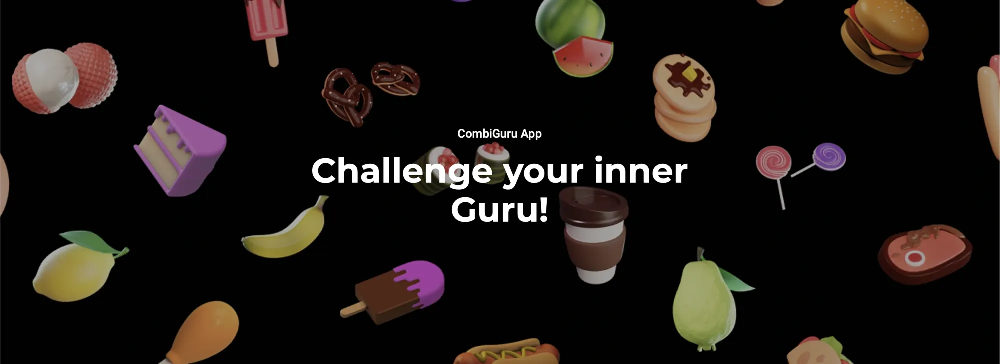
Combi Guru Website
Redesigning the official website to clarify the competition and attract new participants.
Combi Guru is an international Unox initiative where the best culinary schools challenge each other in a cooking competition using cutting-edge Unox ovens.
The website redesign aimed to reposition the platform as a clear, engaging, and informative touchpoint to attract new participants—whether students or schools—and provide all the necessary information about the competition.
Problem
The previous website lacked clarity and failed to convey the scale and ambition of the competition.
Essential details were scattered or hard to find, leading to confusion and a high drop-off rate.
Outcome
A redesigned website that improves information clarity and accessibility, helping schools and students easily understand the competition and how to join, while increasing engagement and participation.
Design Brief through Focus Group
Since the project had recently involved several internal stakeholders in a rather unstructured way, we kicked off with a structured in-person focus group. The goal was to quickly gather all key information regarding business objectives and—most importantly—user insights.
We divided the session into three core areas:
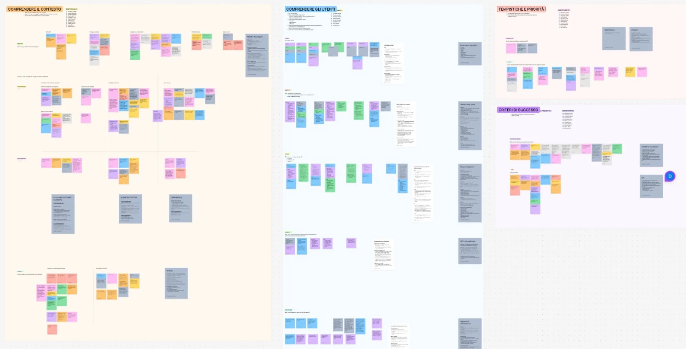
Project understanding
Definition of goals, required and desired gains, and constraints—both from a business/strategic perspective and from the user’s point of view.
User knowledge
Exploration of user goals, needs, pain points, and potential opportunities.
Times and priorities
Definition of project milestones and measurable indicators of success.
KPIs
- May 2024 (completion by April 2024 to allow for translation timeline)
- Average time spent on site (project awareness) → 5 min
- Average number of new customer conversions per edition → 1%
- Average number of new partner conversions → 2/year
- Number of new schools registered (currently 2–3 out of 120) → +30%
- Low number of support requests → -75%
- Usability evaluation score: 5 out of 7
- UX/UI error rate <25%
- Customer satisfaction score >66%
Personas from Focus Group
Thanks to the insights collected during the focus group, we defined two primary and one secondary user personas. This step allowed us to clarify user goals, motivations, and pain points, and helped align the following phases of the project, especially information architecture, on the real needs of our audience.
Chiara
Ambitious student
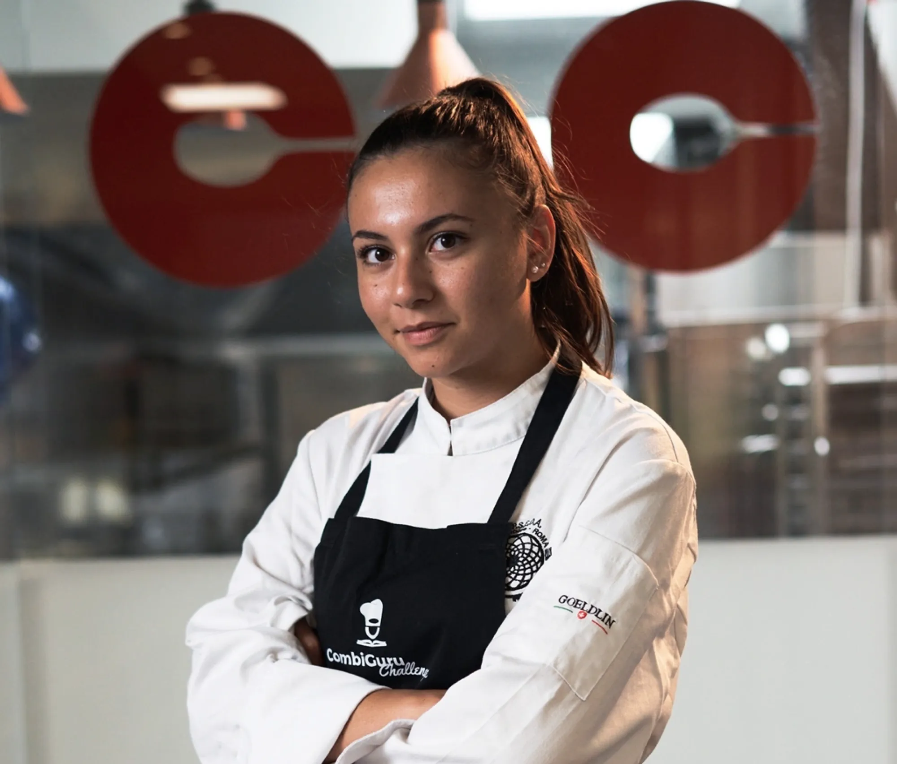
Prof. Del Giudice
Forward-Thinking Professor
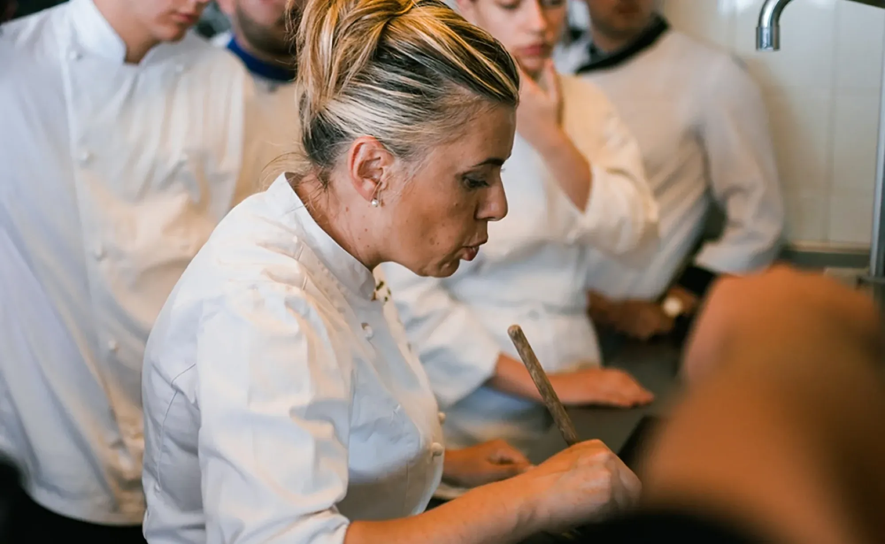
Elly
Competition partner
Information Architecture with Card Sorting
To reorganize the website’s structure and make information easier to find, we conducted a card sorting activity.
Each session was structured to extract both expectations and mental models from our different user types. We began with a 10-minute individual activity where participants were asked to write down, on cards, all the content they would expect or wish to find on the website. This step was crucial to avoid bias and surface spontaneous, user-driven needs.
Following that, in the next 20 minutes, participants engaged in an open card sorting session where they grouped the cards into meaningful categories and were encouraged to rename each group according to what made sense to them thinking aloud. This process helped us understand how users mentally organize information and what labels feel intuitive for them, informing the new information architecture of the website.
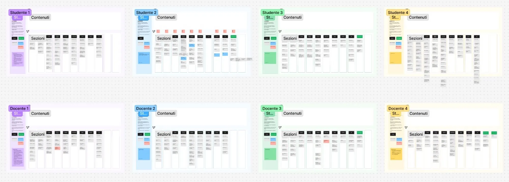
The results of the card sorting sessions highlighted the importance of organizing the site by user type, leading us to design dedicated sections for students, professors, and partners, accessible directly from the main menu. This helped simplify the user journey and ensured that each visitor could quickly find the information most relevant to them.
We also introduced clear and accessible registration and contact sections, acting as primary calls to action and ensuring users can easily take the next step.
A particularly valuable insight emerged during the card sorting sessions: several participants unexpectedly suggested adding a section dedicated to past participants or post-competition activities. We embraced this idea, recognizing the opportunity to foster an ongoing relationship with the community.
This new section can serve as a space for networking opportunities, alumni stories, and dedicated events, strengthening the project's sense of continuity and belonging.
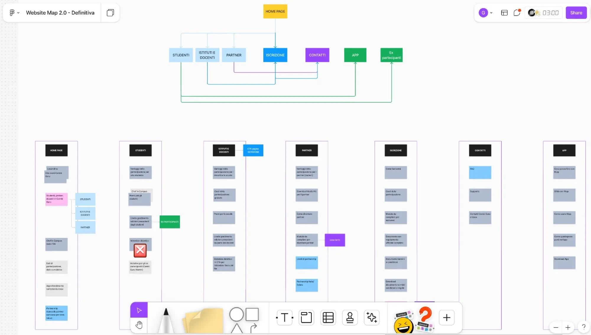
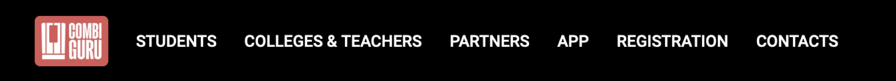
Fast design with real feedbacks
With a solid information architecture in place and limited time available, we moved directly into the design phase using Figma.
Confident in the structure we had built, we opted for a rapid design sprint, validating key interface choices through quick feedback sessions with some of the card sorting participants we had kept in touch with.
This agile, collaborative approach allowed us to refine the UI while staying aligned with users' expectations and creating correct contents and copy with the Marketing Team.
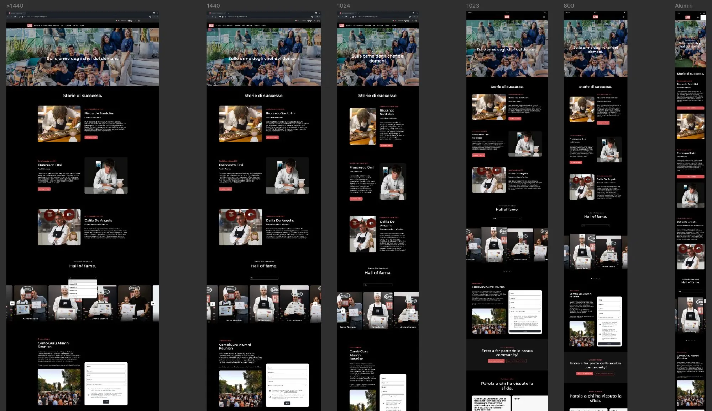
Quick user testing for final setup
Before finalizing the design, we conducted 4 quick user tests thanks to high-fidelity prototyping. Two of these tests provided particularly valuable insights, allowing us to fine-tune the website.
The tests achieved an approximate 80% success rate on targeted tasks, helping us reposition two key elements in more visible areas for the "teacher" audience.
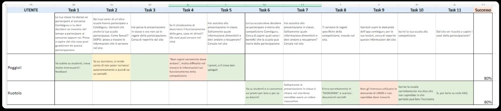
Cross-Team Collaboration
Throughout the project, we worked closely with the Marketing team, sharing user insights and research findings to support the creation of targeted, high-value content.
We also took part in content production activities, such as photo and video shoots and dedicated meetings, which allowed us to reconnect with participants and gather further input for future improvements.
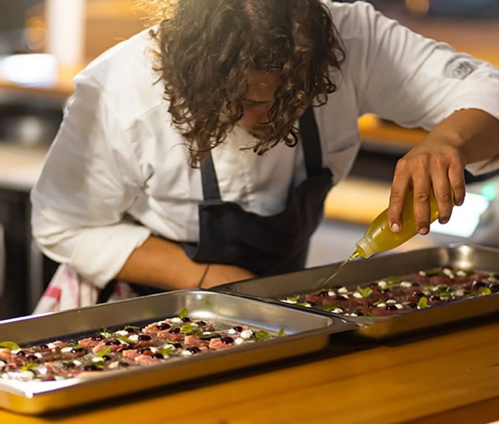
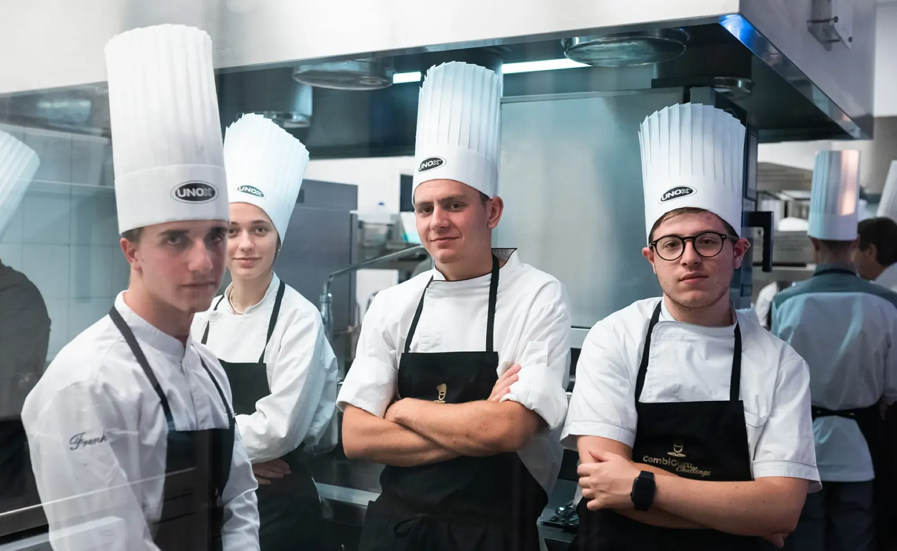
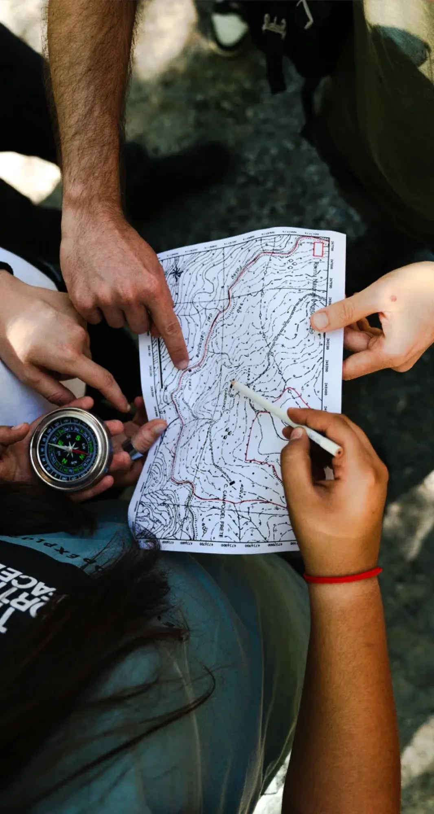
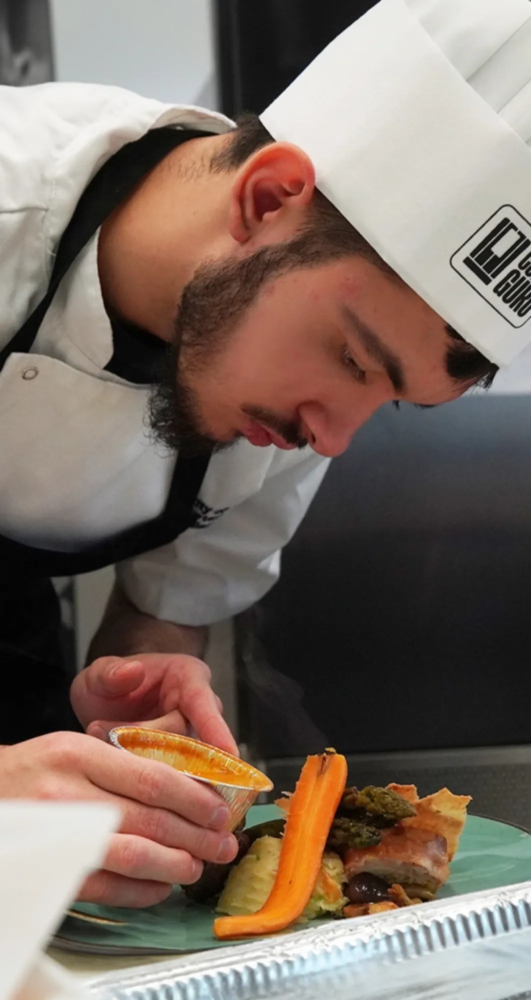
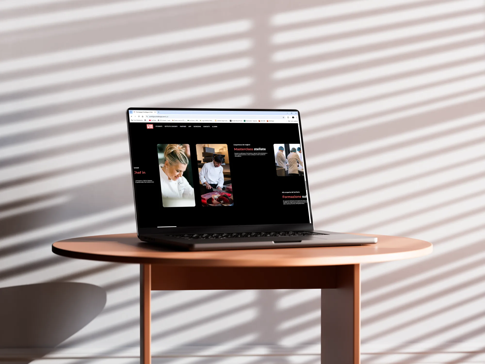
Inpact & Outcomes
- Average time spent on site (project awareness) → 4 min
- Average number of new customer conversions per edition → 12%
- Average number of new partner conversions → 2 for the last competition
- Number of new schools registered → +26%
- Low number of support requests → -64%
- Customer satisfaction score > 82%
Takeaways
This project reaffirmed the strategic value of tailoring the experience around distinct user segments, not only to improve clarity in navigation but to create a sense of relevance and belonging from the very first interaction.
Working with structured user research methods early on, particularly focus groups and card sorting, gave us access to precise, non-obvious insights that shaped both architecture and tone of voice.
The decision to move into UI design quickly was made possible by the solidity of our early research. Informal validation rounds with selected users gave us confidence without slowing momentum.
Some of the most valuable ideas came directly from users, such as the need for a post-competition space that fosters continuity and networking — a reflection of how design can unlock new strategic opportunities.
Other projects

Comparator
A product comparator that helped customers navigate 1,000 look-alike products, cutting confusion in half and giving sales teams the tool they had been waiting for.

SPEED.Compact
Powering the future of fast food: a sleek, intuitive interface for accelerated ovens that boosts workflows, cuts training time, and delivers consistency across every location.

UNOX Design System
From 2023 to 2024, I led UNOX’s design system revamp, evolving it from a two-person library into a scalable, multi-platform design ecosystem.